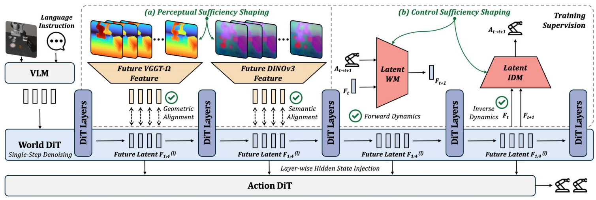
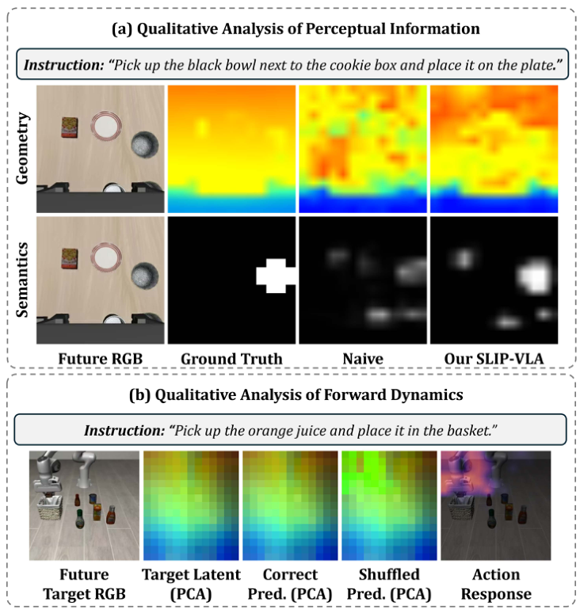
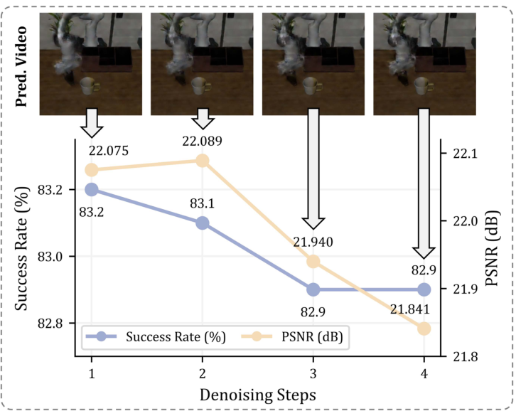

Perceptual sufficiency
Future VGGT-Ω geometry and DINOv3 semantics shape intermediate representations to preserve where interactions happen and which objects matter.
Single-Step Latent Imagination for Policy Learning
in Vision-Language-Action Models
* Equal contribution
Latent imagination
Single World DiT passLIBERO
Average success rateLIBERO-Plus
Under distribution shiftsRoboTwin 2.0
Tied best average in the paperTHE IDEA
What if a robot could anticipate how a scene will evolve without waiting for an entire video to be generated?
SLIP-VLA produces temporally dense future latents with a single denoising update. We shape these representations to preserve future geometry, task-relevant semantics, and the effects of robot actions, then inject them directly into the action policy.
The auxiliary teachers and dynamics models are used only during training. At inference, future imagination takes 12 ms; overall inference latency is 181 ms.
Vision-Language-Action models are increasingly effective for robotic manipulation, yet most predict actions directly from current observations without explicitly modeling future scene evolution. Recent methods introduce future prediction to improve action generation, but dense future modeling often requires expensive iterative denoising, while one-step alternatives can underperform their multi-step counterparts. To reconcile efficient future modeling with strong action performance, we present SLIP-VLA, a policy learning framework that equips VLA models with a Single-Step Latent Imagination for future-aware action prediction. SLIP-VLA obtains temporally dense future latent representations with a single denoising update, and we improve the perceptual sufficiency of these representations by aligning intermediate latents with future geometric and semantic features. We further improve their control sufficiency through action-conditioned latent world modeling and inverse dynamics modeling, explicitly coupling latent transitions with robot actions. Our SLIP-VLA achieves state-of-the-art performance across diverse simulation benchmarks and real-world manipulation tasks, while its single-step latent imagination takes only 12 ms.
01 / REAL-WORLD DEMONSTRATIONS
Six task conditions. Four camera views each.
Explore closed-loop manipulation on the
AgileX COBOT Magic platform.
Success rates are from Table VIII of the paper, with 50 trials per condition. The videos show selected successful rollouts.
02 / HOW IT WORKS
Four future slots. One World DiT pass.
Future representations guide the action
decoder at multiple layers.
Images + language
4 future latent slots
12 ms16-step action chunk

Future VGGT-Ω geometry and DINOv3 semantics shape intermediate representations to preserve where interactions happen and which objects matter.
Forward dynamics predicts latent evolution from actions. Inverse dynamics recovers actions from latent transitions, making the imagined future informative for control.
03 / SIMULATION RESULTS
Selected rollouts alongside StarVLA.
Explore standard manipulation, visual
shifts, and bimanual coordination.
Video comparisons use StarVLA as the baseline. Quantitative results below follow the manuscript, which evaluates a separate set of baselines. Selected rollouts are illustrative, not aggregate evaluations.
ROBUSTNESS / LIBERO-PLUS
+3.9 points over the strongest compared method in Table II.
Selected methods from Table II. Values are success rates (%).
ABLATION / LATENT SHAPING
Perceptual and control shaping work best together.
| Variant | LIBERO | LIBERO-Plus |
|---|---|---|
| Naive single-step | 97.7 | 79.0 |
| + Perceptual | 98.3 | 81.4 |
| + Control | 98.5 | 82.3 |
| + Both (SLIP-VLA) | 98.9 | 83.2 |
Table IV. Same single-step setting across variants.


04 / CITATION
Manuscript citation.
The arXiv identifier will be added
when the preprint is available.
@misc{li2026slipvla,
title = {SLIP-VLA: Single-Step Latent Imagination for Policy
Learning in Vision-Language-Action Models},
author = {Li, Tianfu and Xu, Haoxuan and Chen, Wenbo and Li, Haitian
and Yang, Changchuan and Zheng, Xinhu and Ma, Jun
and Liu, Yuan and Wang, Lujia and Li, Haoang},
year = {2026},
note = {Manuscript},
url = {https://haoxuanxu1024.github.io/SLIP_VLA/}
}